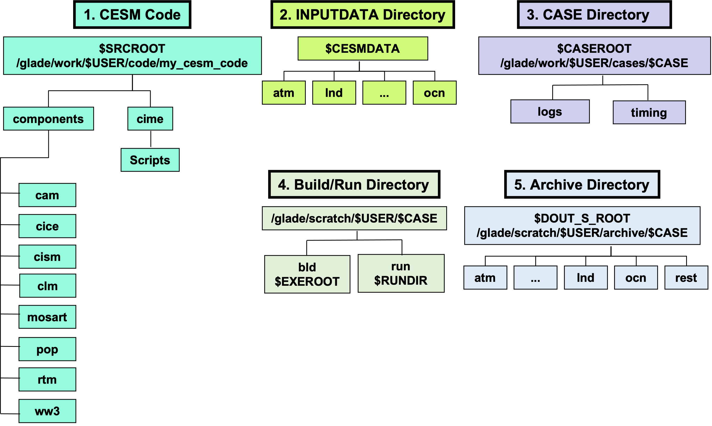

1. Introduction to CESM#
Tutorials at the 2025 paleoCAMP | June 16–June 30, 2025
Jiang Zhu
jiangzhu@ucar.edu
Climate & Global Dynamics Laboratory
NSF National Center for Atmospheric Research
Learning Objectives#
Know basic structure of CESM as a software including the workspaces
Know how to set up a simple experiment with CESM
Know how to customize details of the experiment using xmlchange and namelist
Time to learn: 30 minutes
NOTE: Hands-on exercise is in the next module. You don’t need to do anything yet.
CESM as a software#
~5 million lines of FORTRAN* source code and scripts
You need to build the source code to create and run the executable.
Read more about CESM here
*NOTE: Why FORTRAN?
CESM Workspaces (assuming you run a company that builds new electric vehicles)#
CESM Code, “Headquarter”
contains your intellectual properties, e.g., research/designing of EVs
FORTRAN, Python, & XML (Extensible Markup Language) files
Inputdata Directory, “Supply Warehouse”
contains the raw materials, e.g., steel and batteries
netcdf data
Case Directory, “Production Control Room”
where you give instructions, e.g., to hire 100 workers and produce 5 EVs per day
Text, script, XML files
Build/Run Directory, “Factory”
where workers assemble the EVs
Library, executables, netcdf files, …
Archive Directory, “Storage”
where you store the assembled EVs
netcdf files, log files in text, …

Figure: CESM2 Workspaces
Get the CESM code#
CESM code development and release is on Github:
https://github.com/ESCOMP/CESMIf you would like to get a copy of the code in the future
git clone -b release-cesm2.1.5 ESCOMP/CESM.git cesm2.1.5
./manage_externals/checkout_externals
*NOTE: for this tutorial, please use the code in my workspace: /glade/work/jiangzhu/paleocamp/cesm2.1.5
Summary#
CESM is a software primarily in FORTRAN and You need to build the executable.
Like managing an EV company, you deal with multiple workplaces. What are they?
CESM code is managed on GitHub
Optional advanced resources#
Check out the full annual CESM Tutorial here
Apply for the Annual CESM Tutorial for free